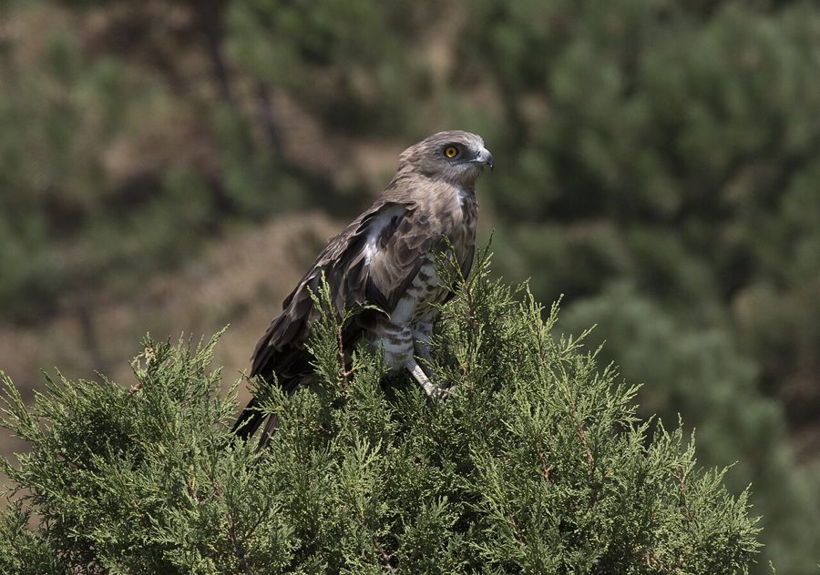

सांपमारShort-toed Snake Eagle
Circaetus gallicus · Accipitridae · BRD-0294

- Scientific name वैज्ञानिक नाम
- Circaetus gallicus (Gmelin, 1788)
- Family कुल
- Accipitridae
- Hindi हिंदी
- सांपमार / शॉर्ट-टोड स्नेक ईगल
- Local names स्थानीय नाम
- sampmar, short toed snake eagle, saanpmar, short toed eagle, saapmarr
- Status here यहाँ की स्थिति
- native
- Movement आवागमन
- Resident, here all year
- Known from कहाँ दर्ज
- Others have published records from the Basti–Ayodhya districts बस्ती–अयोध्या के ज़िलों से दूसरों के प्रकाशित अभिलेख
- IUCN IUCN
- LC
- Review समीक्षा
- not yet reviewed
When to look कब देखें
Present all year. साल भर मौजूद।
Tell it apart from इनसे अलग पहचानें
सांपमार / Short-toed Snake Eagle
Circaetus gallicus (Gmelin, 1788) — Accipitridae
सांपमार — उत्तर प्रदेश के खुले खेतों, बीहड़ों और नदी कगारों पर मंडराने वाला एक विशाल शिकारी बाज है जिसका सिर उल्लू जैसा गोल और आंखें तेज पीली होती हैं। यह हवा में एक ही जगह पंख फड़फड़ाकर ठहरने (होवरिंग) में माहिर है। यह जमीन पर रेंगने वाले जहरीले और बिना जहर वाले दोनों तरह के सांपों का शिकार करता है।
Quick Identification त्वरित पहचान
| Feature | Description |
|---|---|
| Head shape | Large, rounded owl-like head with broad flat crown and piercing golden-yellow eyes |
| Flight silhouette | Broad long wings with dark flight feathers contrasting with predominantly white underwing coverts |
| Breast and belly | White underparts marked with variable pale brown bars or streaks across throat and upper breast |
| Tail pattern | Long greyish-brown tail marked with three dark transverse bands and a broad dark terminal bar |
| Feet morphology | Bare unfeathered tarsi covered in rough hexagonal scales; short, thick toes adapted for grasping snakes |
Large, heavily built raptor characterized in flight by its pale underparts, prominent owl-like head, and long broad wings. It possesses the distinctive habit of hovering stationary in mid-air against head-winds while scanning the ground below for reptiles.
Field tip: Look high above dry cultivated fields or river ravines around midday; look for a large pale raptor hovering stationary with head pointed downwards.
हिंदी: उल्लू जैसा बड़ा गोल सिर, चमकीली पीली आंखें और उड़ते समय नीचे से दिखने वाला सफेद शरीर इसकी पहचान है। यह हवा में एक ही जगह स्थिर तैरता हुआ नीचे जमीन पर सांपों को खोजता है। इसके पंजे छोटे और मजबूत होते हैं।
Morphology आकारिकी
Biometrics as given by Baker (1928) as Circaetus gallicus:
| Measurement | Value | Source |
|---|---|---|
| Female wing | 530 to 571 mm | Baker (1928) as Circaetus gallicus |
| Tail | 28 7 to 330 mm | Baker (1928) as Circaetus gallicus |
| Tarsus | 92 to 97mm | Baker (1928) as Circaetus gallicus |
| Culmen | 40 to 43 mm | Baker (1928) as Circaetus gallicus |
| Male wing | 520 to 536 mm | Baker (1928) as Circaetus gallicus |
| Male tail | 252 to 288 mm | Baker (1928) as Circaetus gallicus |
Adult displays earthy-brown upper plumage, with feathers of crown, nape, and mantle showing dark shaft-streaks. Lores, forehead, and cheeks are whitish with black bristles. Primaries are blackish-brown, diagonally white across basal halves of inner webs. Chin, throat, and upper breast are earthy-brown with black shaft lines; lower parts are white barred with pale brown. Bill is pale greyish-blue tipped with black; cere is pale plumbeous-grey; iris is brilliant golden-yellow; tarsi and feet are dirty yellowish-white covered in heavy protective scales. Female averages larger than male.
Vocalisations. Usually silent when hunting, but utters a musical whistling cry and plaintive mewing calls around the nest during courtship.
हिंदी: इसके पंख बहुत लंबे और चौड़े होते हैं (Baker 1928 as Circaetus gallicus)। मादा नर से थोड़ी बड़ी होती है। इसके पैर पर घुटने के नीचे पर नहीं होते बल्कि मोटे छिलके जैसी त्वचा होती है जो सांप के काटने से बचाती है।
Behaviour & Ecology व्यवहार और पारिस्थितिकी
Superbly adapted for open-country hunting. Spends hours soaring on thermal updrafts or perching conspicuously atop dead trees, telegraph poles, or high river cliffs. Its most characteristic hunting behaviour is hovering stationary on outstretched wings, head bent downward, scanning dry grass and crop stubble. Upon spotting a snake, it parachute-drops in stages before executing a rapid vertical dive to pin the reptile behind the head. It kills snakes on the ground by crushing their heads with powerful talons before swallowing them head-first.
हिंदी: यह धूप के समय आकाश में बहुत ऊंचाई पर मंडराता है या ऊंचे खंभों और पेड़ों पर बैठकर नजर रखता है। शिकार दिखने पर यह तेजी से नीचे उतरकर पंजों से सांप का फन दबा देता है और उसे सिर की तरफ से पूरा निगल जाता है।
Life Cycle / Phenology जीवन चक्र
Breeding season extends across northern India from January to May. Pairs perform aerial displays with steep dives and undulating roller-coaster flights. The nest is a relatively small, compact platform of dry sticks and twigs, lined with green leaves and fresh sprays, built high in solitary trees such as neem, banyan, or babool in open terrain. A single white oval egg is laid and incubated primarily by the female for several weeks. Both parents care for the chick, bringing intact snakes to the nest rim.
हिंदी: जाड़े के अंत से लेकर गर्मी तक इसका घोंसला बनता है। यह खुले मैदान में अकेले खड़े बड़े पेड़ पर सूखी टहनियों का घोंसला बनाता है और उसमें हरी पत्तियां बिछाता है। मादा केवल एक अंडा देती है। माता-पिता दोनों मिलकर बच्चे के लिए सांप लाते हैं।
Host Plants or Prey आहार
Baker (1928) gives its prey as largely snakes, lizards and frogs; it also eats small mammals and birds, and will carry off ducks and small game when wounded. No source examined names the snake species it takes in this region.
हिंदी: इसका मुख्य भोजन सांप, छिपकली और मेंढक हैं (बेकर 1928)। यह छोटे स्तनधारी और पक्षी भी खाता है। इस क्षेत्र में यह किन सांपों का शिकार करता है, यह किसी देखे गए स्रोत में दर्ज नहीं है।
Predators / Natural Enemies शत्रु
As a large raptor, healthy adults have no regular natural predators. Nestlings and eggs may occasionally be preyed upon by mammalian carnivores such as wild cats or large owls if the nest is left unattended. Territorial clashes occur with other large raptors, such as tawny eagles and black kites, over aerial airspace.
हिंदी: बड़े आकार के कारण वयस्क बाज का कोई प्राकृतिक शिकारी नहीं है। घोंसले में रखे अकेले बच्चे को कभी-कभी जंगली बिल्ली या बड़े उल्लू से खतरा हो सकता है। चील और अन्य बाज इसके घोंसले के पास आने पर झगड़ते हैं।
Agricultural / Human Relevance कृषि प्रासंगिकता
Protected under the Wildlife (Protection) Act 1972. Extremely beneficial to farming communities across eastern Uttar Pradesh by controlling rodent-hunting snake populations around village settlements, grain stores, and agricultural fields. It is a completely harmless and noble raptor deserving rigorous protection.
हिंदी: वन्यजीव (संरक्षण) अधिनियम 1972 के तहत संरक्षित। यह खेतों और गांवों के आसपास सांपों की संख्या नियंत्रित करके किसानों की बहुत मदद करता है। यह किसी भी पालतू पशु या फसल को कोई नुकसान नहीं पहुंचाता।
Expected Locally स्थानीय रूप से अपेक्षित
Not a field record. Written from published accounts for eastern Uttar Pradesh. No confirmed local sighting yet — if you have seen it, that is what the atlas needs.
अभी तक स्थानीय पुष्टि नहीं। यह विवरण प्रकाशित स्रोतों से है, किसी अवलोकन से नहीं।
Inhabits open agricultural landscapes, dry fallow tracts, scrub-covered ravines, and wide river bluffs across the northern plains. Observers in eastern Uttar Pradesh should look over open fields and riverine sandbanks of the Ghaghara and Kuwana rivers during bright midday hours.
GBIF holds published records from these districts.
A first local record for the atlas would be a clear photograph showing plumage details, accompanied by date, time, and precise location coordinates sent through the project's About page.
हिंदी: यह पक्षी बस्ती और अयोध्या के खुले खेतों, बीहड़ों और घाघरा नदी के रेतीले किनारों के ऊपर उड़ता देखा जा सकता है। दोपहर के समय जब धूप तेज होती है, तब यह आकाश में मंडराता है।
Distribution वितरण
Global range: Breeds across southern and eastern Europe, western and central Asia, and the Indian Subcontinent; northern populations winter in sub-Saharan Africa.
In India: Widespread resident and local nomad across peninsular India, Rajasthan, the Indo-Gangetic plains, and Deccan plateau.
In Uttar Pradesh: Distributed throughout the open plains, ravines, and cultivated river basins of the state.
In Basti district / eastern UP: Expected as a resident hunter in open agrarian plains and riverine corridors across the district.
हिंदी: यह यूरोप, मध्य एशिया और भारतीय उपमहाद्वीप में फैला हुआ है। उत्तर प्रदेश के लगभग सभी मैदानी जिलों और नदी घाटियों में यह खुले आकाश में दिखाई देता है।
Research Questions शोध प्रश्न
- What proportion of snake eagle diet in eastern Uttar Pradesh comprises venomous species versus non-venomous colubrids?
- How does the expansion of dense sugarcane monocultures impact the hovering hunting efficiency of snake eagles? / क्या गन्ने के घने खेतों के बढ़ने से इस बाज को सांप ढूंढने में परेशानी होती है?
- What are the key tree species chosen for solitary nesting across agrarian landscapes of the Gangetic plain?
- A schoolchild can look up into the sky at noon to observe whether a soaring raptor hovers in one spot like a kite / क्या कोई बच्चा दोपहर में आकाश में किसी बाज को हवा में एक जगह ठहरते हुए देख सकता है?
- How do seasonal flood pulses along the Ghaghara River affect reptile abundance and snake eagle territory boundaries?
हिंदी: गन्ने की खेती बढ़ने से इस पक्षी के शिकार पर क्या असर पड़ रहा है? क्या यह पक्षी बस्ती में जहरीले सांपों को ज्यादा खाता है या बिना जहर वाले सांपों को?
Similar Species मिलती-जुलती प्रजातियाँ
| Species | How to tell apart | हिंदी | |
|---|---|---|---|
| Crested Serpent Eagle \ | Spilornis cheela | Dark brown body, prominent bushy black-and-white crest, bare yellow face skin, and broad white tail band | क्रेस्टेड सर्पेंट ईगल का शरीर गहरा भूरा होता है और उसके सिर पर पंखे जैसी कलगी होती है |
| Booted Eagle \ | Hieraaetus pennatus | Much smaller size, feathered tarsi, pale landing lights at wing base, and lacks owl-like facial appearance | बूटेड ईगल आकार में काफी छोटा होता है और उसके पैर नीचे तक परों से ढके होते हैं |
Field rule: Large raptor with owl-like rounded head, brilliant yellow eyes, pale barred underbody, and habit of hovering stationary in flight.
हिंदी: उल्लू जैसा बड़ा गोल सिर, चमकीली पीली आंखें, नीचे से सफेद शरीर और हवा में एक जगह ठहरकर उड़ने की आदत से यह आसानी से पहचाना जाता है।
Taxonomy & Classification वर्गीकरण
Original description. Gmelin (1788) — see GBIF.
Subspecies. Monotypic species throughout its continental range. Baker (1928) treats it under the accepted name Circaetus gallicus.
Family and order placement. Belongs to the family Accipitridae, order Accipitriformes, class Aves.
Phylogenetic notes. Member of the specialized serpent eagle subfamily Circaetinae, characterized by unfeathered, heavily scaled tarsi evolved for defense against snake bites.
IUCN status rationale. Assessed globally as Least Concern (LC) by IUCN (BirdLife International 2024) owing to its enormous international range.
हिंदी: इसका वैज्ञानिक विवरण 1788 में ग्मेलिन ने दिया था। यह असीसीपिट्रिडे कुल का सदस्य है और वैश्विक स्तर पर कम चिंताजनक श्रेणी में है।
Photo Gallery फोटो गैलरी
No photos yet — add field photos to media/species/short_toed_snake_eagle/ and run node scripts/sync_photos.js.
Photos needed आवश्यक फोटो
- [ ] Individual in hovering flight viewed from below showing pale underwing pattern (हवा में स्थिर तैरते हुए पक्षी के नीचे के पंखों की बनावट)
- [ ] Perched adult showing owl-like head and yellow eyes (बैठा हुआ वयस्क पक्षी जिसमें उल्लू जैसा सिर और पीली आंखें दिखें)
- [ ] Adult carrying snake prey in talons or bill (पंजों या चोंच में सांप दबाए उड़ता हुआ बाज)
References संदर्भ
- Original description: Gmelin, 1788 — see GBIF.
- Baker, E. C. S. (1928). The Fauna of British India, Including Ceylon and Burma: Birds. 2nd ed., Vol. 5. Taylor & Francis, London. (as Circaetus gallicus).
- Ali, S. & Ripley, S. D. (1983). Handbook of the Birds of India and Pakistan. Compact ed. Oxford University Press, New Delhi.
- Grimmett, R., Inskipp, C. & Inskipp, T. (2011). Birds of the Indian Subcontinent. 2nd ed. Christopher Helm, London.
- Rasmussen, P. C. & Anderton, J. C. (2012). Birds of South Asia: The Ripley Guide. Vols. 1–2. 2nd ed. Smithsonian Institution and Lynx Edicions.
- IUCN Red List of Threatened Species: Circaetus gallicus, 2024.
- GBIF Occurrence Data — Circaetus gallicus, India (2025).
Source file: species/fauna/birds/short_toed_snake_eagle.md